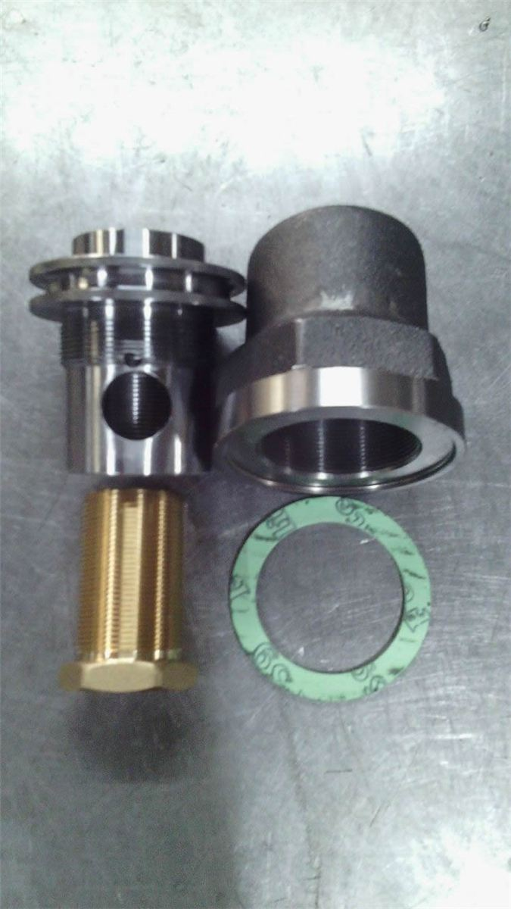
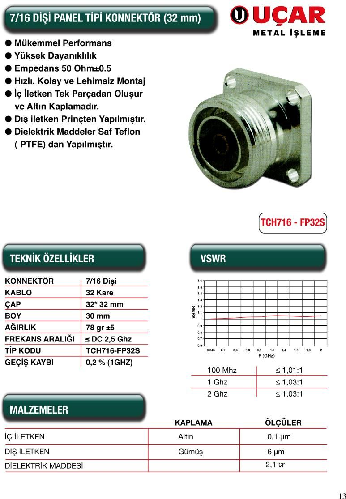
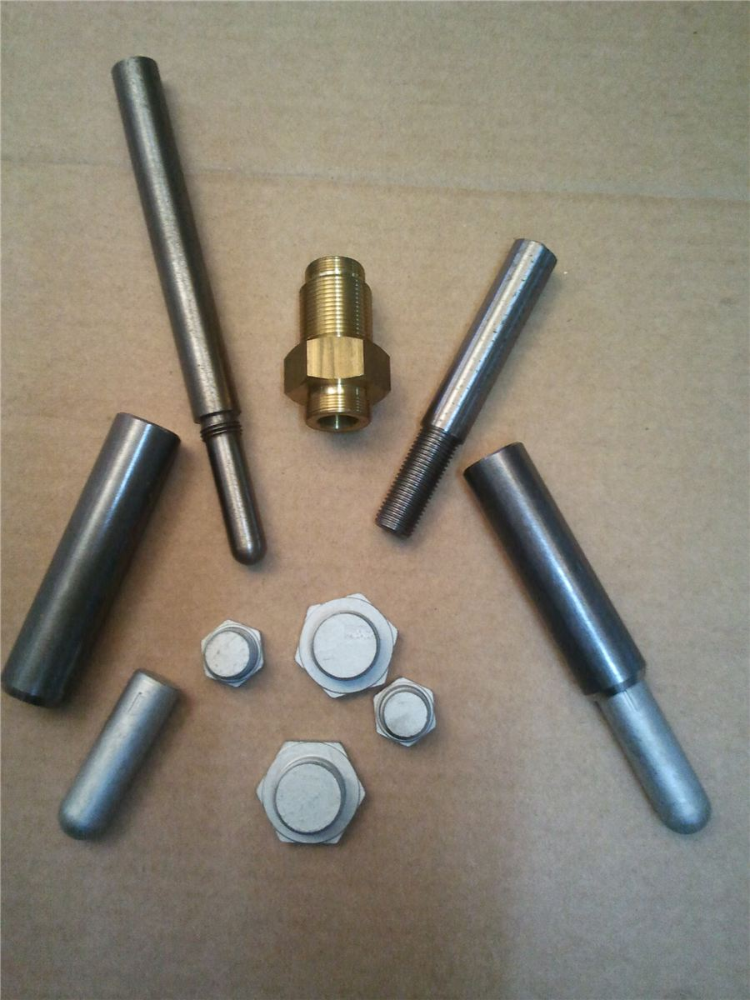

Talaşlı imalatta 55 yılı aşkın tecrübe
Elektrik ve otomotiv sanayi için yedek parça ve transformatör parçalarını CNC tezgâhlarımızda, ISO 9001:2015 kalite yönetim sistemiyle üretiyoruz.
Ne üretiyoruz?
Farklı sektörlere yönelik metal aksesuar ve yedek parçaların talaşlı imalatı ve satışı.

Trafo Aksesuarları
Yağ boşaltma vanaları, flanşlar, tapalar, termometre cepleri ve transformatörler için tüm bağlantı elemanları.
İncele
GSM Konnektörleri
N tipi, 7/16 ve flanş tipi konnektörler; 1/2, 7/8 ve 1-5/8 foam kablolar için.
İncele
Otomotiv
Otomotiv yan sanayisinin ihtiyaçlarına yönelik, farklı ölçü ve özelliklerde metal parçalar üretiyoruz.
İncele


Müşteri talebine göre özel imalat, seri üretimde süreklilik
Uçar Metal, 55 yılı aşkın süredir metal işleme sektöründe faaliyet göstermektedir. CNC torna ve işleme merkezlerinde, farklı sektörlerin ihtiyaçlarına yönelik metal parçaların özel imalatını ve seri üretimini gerçekleştirmektedir.
- Müşteri taleplerini ve yürürlükteki şartları karşılayan güvenilir ürünler
- Yüksek kalite, düşük maliyet ve zamanında teslimat
- Yan sanayinin önde gelen kuruluşları tarafından tercih edilen ürünler
Üretimin her aşamasında kalite kontrol
ISO 9001:2015
Kalite yönetim sistemimiz TGS Cert tarafından belgelendirilmiştir. Belge geçerlilik tarihi: 29.09.2027
UV Çatlak Kontrolü
Müşteri isteğine bağlı Multiflux AC/DC cihazıyla çatlak kontrolü gerçekleştirilmektedir.
Modern Makine Parkı
CNC torna, dik işleme merkezi ve otomatik yükleyicili tezgâhlarla hassas ve tekrarlanabilir üretim.
Referanslarımız


Duyurular
- Web sitemiz yenilendi. Teknik resimlerinizi artık Teklif Formu üzerinden doğrudan gönderebilirsiniz.
- ISO 9001:2015 Kalite Yönetim Sistemi belgemiz 2026–2027 dönemi için yenilendi.
- İstanbul Ticaret Odası kapasite raporumuz güncellendi (geçerlilik: 07.02.2027).
Çalışma Saatlerimiz
| Pazartesi – Cuma | 08:00 – 18:00 |
| Cumartesi | Kapalı |
| Pazar | Kapalı |
Kavakpınar Mah. Cemil Meriç Cad. Koruma Küçük Sanayi Sitesi F Blok No:137/6 İç Kapı No:92 Pendik / İstanbul
İletişim & Yol TarifiTeknik resminizi gönderin, teklifimizi hazırlayalım
Özel imalat, fabrikasyon ve seri üretim talepleriniz için bize ulaşın.